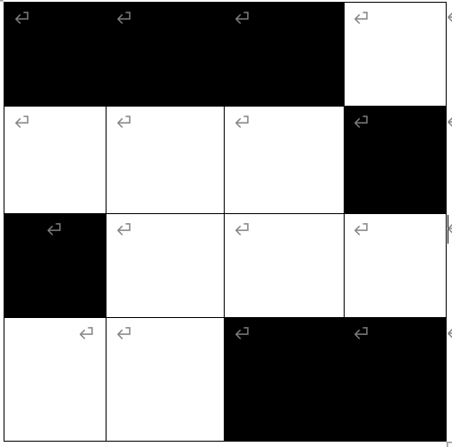

Data Analysis Practice Questions
1. Data Table Statistics
| Revised Data Table | ||||
|---|---|---|---|---|
| Car | Engine Size | Fuel Type | Air Conditioning | Transmission Type |
| 1 | 1.6 | Petrol | yes | Manual |
| 2 | 2.0 | Diesel | yes | Automatic |
| 3 | 1.4 | Electric | no | Manual |
| 4 | 1.8 | Petrol | yes | Semi-Automatic |
| 5 | 2.5 | Diesel | no | Automatic |
2. Missing Value Imputation
| Revised Data Table | |||
|---|---|---|---|
| Objects/Signs | X1 | X2 | X3 |
| Object 1 | 15 | 25 | 80 |
| Object 2 | 45 | 65 | 70 |
| Object 3 | 75 | ? | 120 |
| Object 4 | 85 | 75 | 150 |
| Object 5 | 55 | 65 | 90 |
| Object 6 | 85 | 35 | 100 |
3. Naive Bayes Classification
Spam Messages:
- "Congratulations! You've been selected for a free vacation. Claim now!"
- "Exclusive offer! Get 70% off on your next purchase. Limited time only!"
- "Hi, how's it going? Let's catch up soon."
- "Don't forget the team meeting scheduled for 3 p.m. today."
- "I've attached the document you requested. Please review it."
"Amazing opportunity to win a luxury car! Enter now!"
4. Gini Impurity Calculation
| Revised Data Table | ||||
|---|---|---|---|---|
| Object\Attribute | X1 | X2 | X3 | Z |
| A | 1 | 0 | 1 | 0 |
| B | 0 | 1 | 1 | 1 |
| C | 1 | 1 | 0 | 1 |
| D | 1 | 1 | 0 | 1 |
5. Data Clustering (R=2.5)
| Distance Matrix | |||||
|---|---|---|---|---|---|
| X | Y | Z | W | V | |
| X | 0 | 2.8 | 3.2 | 2.7 | 1.5 |
| Y | 2.8 | 0 | 1.2 | 2.1 | 4.0 |
| Z | 3.2 | 1.2 | 0 | 2.9 | 3.5 |
| W | 2.7 | 2.1 | 2.9 | 0 | 3.8 |
| V | 1.5 | 4.0 | 3.5 | 3.8 | 0 |
6. MAE and MAPE Calculation
| Revised Data Table | |||
|---|---|---|---|
| Objects | Non-target Attributes | Z | Z' |
| A | ... | 2 | 1 |
| B | ... | 3 | 3 |
| C | ... | 4 | 3 |
| D | ... | 5 | 6 |
| E | ... | 6 | 4 |
| F | ... | -2 | 0 |
| G | ... | -3 | -2 |
| H | ... | -4 | -5 |
7. Outlier Detection
| Revised Data Table | |||
|---|---|---|---|
| Object | X1 | X2 | X3 |
| A | 2 | 2 | 1 |
| B | -1 | 3 | 0 |
| C | 3 | 4 | 2 |
| D | 2 | 1 | 5 |
8. Outlier Range
Given: First Quartile (Q1) = 3, Third Quartile (Q3) = 7
9. Regression Model Construction
| Revised Data Table | ||
|---|---|---|
| A1 | A2 | B |
| 4 | 8 | 12 |
| 7 | 10 | 18 |
| 9 | 13 | 24 |
| 12 | 15 | 30 |
| 14 | 18 | 36 |
10. Binary Encoding
Graphical Representation:

Binary Encoding Vector Illustration